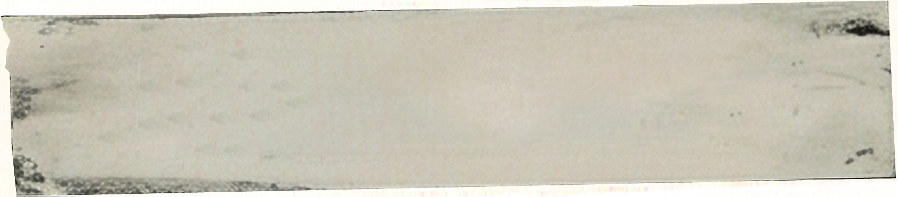

This game listens through your device's microphone to measure how loud you can scream. Tap OK to allow microphone access and start the music.
Stay silent while the microphone calibrates…
This erases today's scoreboard for good. This can't be undone.